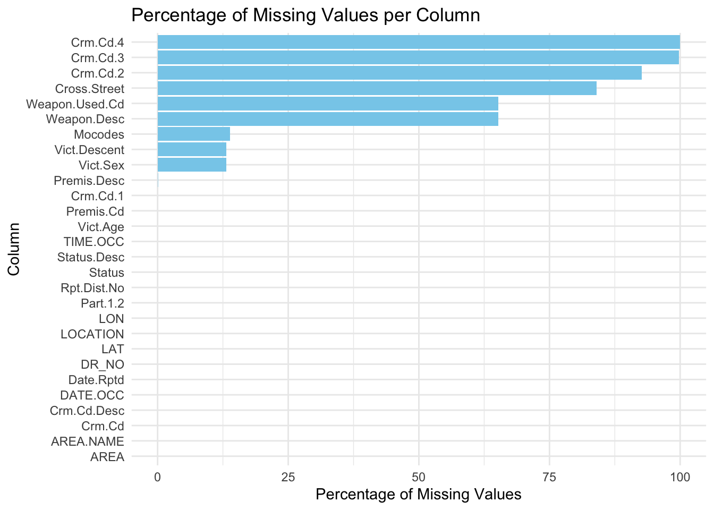
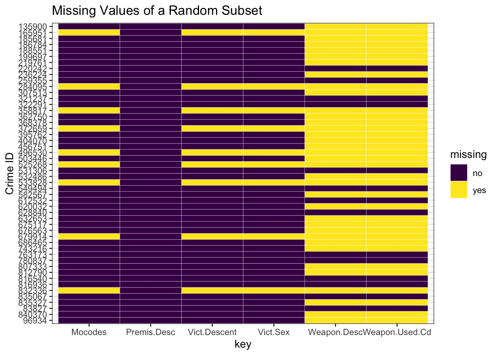

Code
df <- read.csv("/Users/zainabshakruwala/Downloads/Crime_Data_from_2020_to_Present.csv")The data source that we draw on for the project is: https://catalog.data.gov/dataset/crime-data-from-2020-to-present , https://data.lacity.org/Public-Safety/Crime-Data-from-2020-to-Present/2nrs-mtv8 The data is collected by the Los Angeles Police Department (LAPD), via transcribing the original crime reports that are typed on paper.
Format of the data: CSV file
Frequency of updates: The dataset is refreshed and updated weekly.
Dimensions of the data (as downloaded on 27 November, 2023): (843515, 28)
Columns of the dataset:
DR_NO
Division of Records Number: Official file number made up of a 2 digit year, area ID, and 5 digits
Date Rptd [Date Reported]
MM/DD/YYYY
DATE OCC [Date occurred]
MM/DD/YYYY
TIME OCC [Time occurred]
In 24 hour military time
AREA
The LAPD has 21 Community Police Stations referred to as Geographic Areas within the department. These Geographic Areas are sequentially numbered from 1-21.
AREA NAME
The 21 Geographic Areas or Patrol Divisions are also given a name designation that references a landmark or the surrounding community that it is responsible for. For example 77th Street Division is located at the intersection of South Broadway and 77th Street, serving neighborhoods in South Los Angeles
Rpt Dist No
A four-digit code that represents a sub-area within a Geographic Area. All crime records reference the “RD” that it occurred in for statistical comparisons
Part 1-2
Not explained
Crm Cd
Indicates the crime committed. (Same as Crime Code 1)
Crm Cd Desc [Crime committed description]
Defines the Crime Code provided.
Mocodes
Modus Operandi: Activities associated with the suspect in commission of the crime
Vict Age
Two character numeric
Vict Sex
F - Female M - Male X - Unknown
Vict Descent
Descent Code: A - Other Asian B - Black C - Chinese D - Cambodian F - Filipino G - Guamanian H - Hispanic/Latin/Mexican I - American Indian/Alaskan Native J - Japanese K - Korean L - Laotian O - Other P - Pacific Islander S - Samoan U - Hawaiian V - Vietnamese W - White X - Unknown Z - Asian Indian
Premis Cd
The type of structure, vehicle, or location where the crime took place.
Premis Desc
Defines the Premise Code provided.
Weapon Used Cd
The type of weapon used in the crime.
Weapon Desc
Defines the Weapon Used Code provided.
Status
Status of the case. (IC is the default)
Status Desc
Defines the Status Code provided
Crm Cd 1
Indicates the crime committed. Crime Code 1 is the primary and most serious one. Crime Code 2, 3, and 4 are respectively less serious offenses. Lower crime class numbers are more serious.
Crm Cd 2
May contain a code for an additional crime, less serious than Crime Code 1.
Crm Cd 3
May contain a code for an additional crime, less serious than Crime Code 1
Crm Cd 4
May contain a code for an additional crime, less serious than Crime Code 1
LOCATION
Street address of crime incident rounded to the nearest hundred block to maintain anonymity.
Cross Street
Cross Street of rounded Address
LAT
Latitude
LON
Longitude
Each row represents one crime occurrence and the details of the crime and the victim.
Known issues within the dataset: Since it consists of records that were typed on paper, it may have inaccuracies by humans. Additionally, the address fields are only provided to the nearest hundred block to maintain privacy. Location fields are missing in some cases, and have been replaced by (0°, 0°).
Discovered issues within the dataset:
Time stamp in date columns are meaningless, since there is a time of occurrence column separately, and all the times in the date column are the beginning of the day.
X is present in the victim description columns like sex and descent. We will consider these to be instances where the victim would have preferred to be anonymous.
There exist rows where though the sex and descent columns are meaningful (not X), the age column contains a 0 (which might seem impossible).
We plan to import the data by downloading the CSV data file onto our local computer, and then working with it in RStudio by reading this file using read.csv. After we write the code for our project including graphs etc., we will use GitHub to collaborate with each other and contribute to our project.
To answer our research questions listed in the introduction, we will follow the below plan.
• Firstly, we will analyze the missing values in our dataset as follows:
If the victim description cells are blank with no value entered, we will drop those rows.
While analysing how factors like victim sex and descent affect crime, if the crime committed is against an entity (for example shoplifting etc.), we will neglect the row. If the crime committed is against the person and the columns of sex and descent have ‘X’, then we will drop the rows.
If the age is 0 but the columns of sex and descent do not have an ‘X’ entry, we will drop the row considering an age of zero years impossible.
Then we will proceed to answer our research questions by performing the following proposed visualizations:
We will plot a histogram with a 10-year grouping
We will plot a bar chart, with the sex on the x-axis.
We will plot a bar chart, with the descent on the x-axis.
We will plot a histogram with an hourly grouping
We will utilize a time-series to visualize the number of crimes that took place over the range of date, which is 2020-present.
We will use a Biplot to find the best area to live in. A mosaic plot can be used to find the correlation between type of crime and area of occurrence.
We will utilize PCA to find out how much variance the variables capture for the crimes of sexual nature.
df <- read.csv("/Users/zainabshakruwala/Downloads/Crime_Data_from_2020_to_Present.csv")Our first plot will showcase the percentage of missing values in each column so that we are made aware of the columns that have mostly missing values (that can be dropped or not be paid attention to in our analysis), and which will also let us understand which variables to focus on to see if there are patterns in missing value columns across crime records.
library(tidyverse)── Attaching core tidyverse packages ──────────────────────── tidyverse 2.0.0 ──
✔ dplyr 1.1.3 ✔ readr 2.1.4
✔ forcats 1.0.0 ✔ stringr 1.5.0
✔ ggplot2 3.4.4 ✔ tibble 3.2.1
✔ lubridate 1.9.2 ✔ tidyr 1.3.0
✔ purrr 1.0.2
── Conflicts ────────────────────────────────────────── tidyverse_conflicts() ──
✖ dplyr::filter() masks stats::filter()
✖ dplyr::lag() masks stats::lag()
ℹ Use the conflicted package (<http://conflicted.r-lib.org/>) to force all conflicts to become errors#Adding NA to blank values
df[df==""]<-NA
missing_percentage <- (colSums(is.na(df)) / nrow(df)) * 100
missing_df <- data.frame(
column = names(missing_percentage),
percentage = missing_percentage
)
missing_df <- missing_df[order(missing_df$percentage), ]
ggplot(missing_df, aes(x = reorder(column, percentage), y = percentage)) +
geom_bar(stat = "identity", fill = "skyblue") +
labs(
title = "Percentage of Missing Values per Column",
x = "Column",
y = "Percentage of Missing Values"
) +
theme_minimal() +
coord_flip()
From the above, we observe that Crm.Cd.4 and Crm.Cd.3 have close to 100% missing values (which are less serious crimes than code 1). The columns of Crm.Cd.2 and Cross.Street also have considerable amount of missing values (>75%). Information of the weapon that was used encoded in columns like Weapon.Used.Cd and Weapon.Desc have more than 50% missing values, which makes sense because some crimes do not involve the use of weapons to be committed. Mocodes, Victim Age and Victim Sex are columns that have around 12% missing values, and their probable reasons have been stated previously in the research plan. Premise Description also has negligible but non-zero missing values in its column. The other columns have zero missing values.
So, to analyse the patterns in missing values across columns that have atleast one missing value (since our dataset is too large and analysing all records clearly will not be feasible), we will focus on those columns that firstly have atleast one missing value and secondly have the number of missing values in the range of 50 to 700000. This will allow us to ignore the Crm.Cd columns which are missing for most records, and observe the pattern that a random subset of 50 crime records have with respect to their values of the columns that satisfy this criteria. The subset of 50 is also chosen so that we clearly observe the records on the y axis.
subset_size <- 50
# Identify rows with missing values in specific columns
rows_with_missing <- which(apply(df, 1, function(x) any(is.na(x))))
# Identify columns with missing values in the selected rows
columns_with_missing <- names(which(colSums(is.na(df[rows_with_missing, ])) > 50 & colSums(is.na(df[rows_with_missing, ])) < 700000))
# Randomly subset rows with missing values in specific columns
random_subset <- df[sample(rows_with_missing, subset_size), columns_with_missing, drop = FALSE]tidydf <- random_subset %>%
rownames_to_column("id") %>%
gather(key, value, -id) %>%
mutate(missing = ifelse(is.na(value), "yes", "no"))
ggplot(tidydf, aes(x = key, y = fct_rev(id), fill = missing)) +
geom_tile(color = "white") +
ggtitle("Missing Values of a Random Subset") +
ylab('Crime ID') +
scale_fill_viridis_d() +
theme_bw()
We observe from the above plot that there is some correlation between the occurrence of a missing value entry for victim age and victim sex, since they both go missing simultaneously. This supports our hypothesis stated in the research plan, where we proposed that since the crime in such cases could be caused against some entity or company instead of a singular individual, such details become irrelevant and hence are missing.
Since the missing value percentage of Premis.Desc column was very low, our random subset has no missing values in this column. As expected, on the other hand, the columns of Weapon related information have higher number of missing values since their percentage was higher too, hence records are more probable to have them missing (both missing at the same time). Mocodes which stands for Modus Operandi refers to activities associated with the suspect in commission of the crime. This also has a strong correlation with the victim age and sex in terms of missing values.